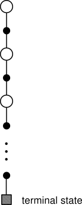
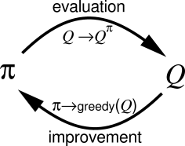
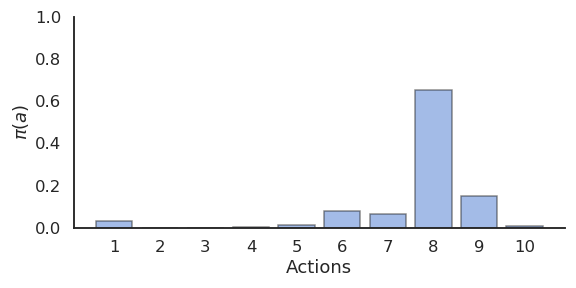
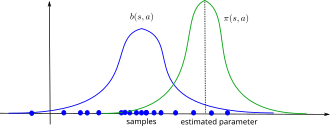
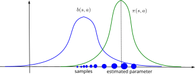

Monte Carlo Control
Monte Carlo control estimates value functions through sampling
Key idea of Reinforcement learning: Generalized Policy Iteration

RL algorithms iterate over two steps:
Policy evaluation
For a given policy \(\pi\), the value of all states \(V^\pi(s)\) or all state-action pairs \(Q^\pi(s, a)\) is calculated, either based on:
the Bellman equations (Dynamic Programming)
sampled experience (Monte Carlo and Temporal Difference)
Policy improvement
- From the current estimated values \(V^\pi(s)\) or \(Q^\pi(s, a)\), a new better policy \(\pi\) is derived.
After enough iterations, the policy converges to the optimal policy (if the states are Markov).
1 - Monte Carlo control
Principle of Monte Carlo (MC) methods
- The value of each state is defined as the mathematical expectation of the return obtained after that state and thereafter following the policy \(\pi\):
\[ V^{\pi} (s) = \mathbb{E}_{\rho_\pi} ( R_t | s_t = s) = \mathbb{E}_{\rho_\pi} ( \sum_{k=0}^{\infty} \gamma^k r_{t+k+1} | s_t = s ) \]

- Instead of solving the Bellman equations, Monte Carlo methods (MC) approximate this mathematical expectation by sampling \(M\) trajectories \(\tau_i\) starting from \(s\) and computing the sampling average of the obtained returns:
\[ V^{\pi}(s) = \mathbb{E}_{\rho_\pi} (R_t | s_t = s) \approx \frac{1}{M} \sum_{i=1}^M R(\tau_i) \]
If you have enough trajectories, the sampling average is an unbiased estimator of the value function.
The advantage of Monte Carlo methods is that they require only experience, not the complete dynamics \(p(s' | s,a)\) and \(r(s, a, s')\) : model-free.
Monte Carlo policy evaluation
- The idea of MC policy evaluation is to repeatedly sample episodes starting from each possible state \(s_0\) and maintain a running average of the obtained returns for each state:

while True:
Start from an initial state \(s_0\).
Generate a sequence of transitions according to the current policy \(\pi\) until a terminal state \(s_T\) is reached.
\[ \tau = (s_o, a_o, r_ 1, s_1, a_1, \ldots, s_T) \]
Compute the return \(R_t = \sum_{k=0}^{\infty} \gamma^k r_{t+k+1}\) for all encountered states \(s_0, s_1, \ldots, s_T\).
Update the estimated state value \(V(s_t)\) of all encountered states using the obtained return:
\[ V(s_t) \leftarrow V(s_t) + \alpha \, (R_t - V(s_t)) \]
Monte Carlo policy evaluation of action values
The same method can be used to estimate Q-values.
while True:
Start from an initial state \(s_0\).
Generate a sequence of transitions according to the current policy \(\pi\) until a terminal state \(s_T\) is reached.
\[ \tau = (s_o, a_o, r_ 1, s_1, a_1, \ldots, s_T) \]
Compute the return \(R_t = \sum_{k=0}^{\infty} \gamma^k r_{t+k+1}\) for all encountered state-action pairs \((s_0, a_0), (s_1, a_1), \ldots, (s_{T-1}, a_{T-1})\).
Update the estimated action value \(Q(s_t, a_t)\) of all encountered state-action pairs using the obtained return:
\[ Q(s_t, a_t) \leftarrow Q(s_t, a_t) + \alpha \, (R_t - Q(s_t, a_t)) \]
- There are much more values to estimate (one per state-action pair), but the policy will be easier to derive.
Monte Carlo policy improvement
After each episode, the state or action values of the visited \((s, a)\) pairs have changed, so the current policy might not be optimal anymore.
As in DP, the policy can then be improved in a greedy manner:
\[\begin{aligned} \pi'(s) & = \text{argmax}_a Q(s, a)\\ &\\ & = \text{argmax}_a \sum_{s' \in \mathcal{S}} p(s'|s, a) \, [r(s, a, s') + \gamma \, V(s')] \\ \end{aligned} \]

Estimating the Q-values allows to act greedily, while estimating the V-values still requires the dynamics \(p(s' | s,a)\) and \(r(s, a, s')\) (one-step lookahead).
An approximation of these dynamics can be sufficient.
Monte Carlo control
Monte Carlo control alternates between MC policy evaluation and policy improvement until the optimal policy is found.
while True:
Select an initial state \(s_0\).
Generate a sequence of transitions according to the current policy \(\pi\) until a terminal state \(s_T\) is reached.
\[ \tau = (s_o, a_o, r_ 1, s_1, a_1, \ldots, s_T) \]
Compute the return \(R_t = \sum_{k=0}^{\infty} \gamma^k r_{t+k+1}\) of all encountered state-action pairs.
Update the estimated action value \(Q(s_t, a_t)\) of all encountered state-action pairs:
\[ Q(s_t, a_t) \leftarrow Q(s_t, a_t) + \alpha \, (R_t - Q(s_t, a_t)) \]
- For each state \(s_t\) in the episode, improve the policy:
\[ \pi(s_t, a) = \begin{cases} 1\; \text{if} \; a = \text{argmax} \, Q(s_t, a) \\ 0 \; \text{otherwise.} \\ \end{cases} \]
2 - On-policy Monte Carlo control
How to generate the episodes?
The problem with MC control is that we need a policy to generate the sample episodes, but it is also that policy that we want to learn.
We have the same exploration/exploitation problem as in bandits:
If I trust my estimates too much (exploitation), I may miss more interesting solutions by keeping generating the same episodes.
If I act randomly (exploration), I will find more interesting solutions, but I won’t keep doing them.

Exploration/Exploitation dilemma
Exploitation is using the current estimated values to select the greedy action:
- The estimated values represent how good we think an action is, so we have to use this value to update the policy.
Exploration is executing non-greedy actions to try to reduce our uncertainty about the true values:
- The values are only estimates: they may be wrong so we can not trust them completely.
If you only exploit your estimates, you may miss interesting solutions.
If you only explore, you do not use what you know: you act randomly and do not obtain as much reward as you could.
\(\rightarrow\) You can’t exploit all the time; you can’t explore all the time.
\(\rightarrow\) You can never stop exploring; but you can reduce it if your performance is good enough.
Stochastic policies
- Exploration can be ensured by forcing the learned policy to be stochastic, aka \(\epsilon\)-soft.

- \(\epsilon\)-Greedy action selection randomly selects non-greedy actions with a small probability \(\epsilon\):
\[ \pi(s, a) = \begin{cases} 1 - \epsilon \; \text{if} \; a = \text{argmax}\, Q(s, a) \\ \frac{\epsilon}{|\mathcal{A}| - 1} \; \text{otherwise.} \end{cases} \]

- Softmax action selection uses a Gibbs (or Boltzmann) distribution to represent the probability of choosing the action \(a\) in state \(s\):
\[ \pi(s, a) = \frac{\exp Q(s, a) / \tau}{ \sum_b \exp Q(s, b) / \tau} \]
- \(\epsilon\)-greedy choses non-greedy actions randomly, while softmax favors the best alternatives.
On-policy Monte Carlo control
In on-policy control methods, the learned policy has to be \(\epsilon\)-soft, which means all actions have a probability of at least \(\frac{\epsilon}{|\mathcal{A}|}\) to be visited. \(\epsilon\)-greedy and softmax policies meet this criteria.
Each sample episode is generated using this policy, which ensures exploration, while the control method still converges towards the optimal \(\epsilon\)-policy.
while True:
Generate an episode \(\tau = (s_0, a_0, r_1, \ldots, s_T)\) using the current stochastic policy \(\pi\).
For each state-action pair \((s_t, a_t)\) in the episode, update the estimated Q-value:
\[ Q(s_t, a_t) \leftarrow Q(s_t, a_t) + \alpha \, (R_t - Q(s_t, a_t)) \]
- For each state \(s_t\) in the episode, improve the policy (e.g. \(\epsilon\)-greedy):
\[ \pi(s_t, a) = \begin{cases} 1 - \epsilon \; \text{if} \; a = \text{argmax}\, Q(s, a) \\ \frac{\epsilon}{|\mathcal{A(s_t)}-1|} \; \text{otherwise.} \\ \end{cases} \]
3 - Off-policy Monte Carlo control
Off-policy Monte Carlo control
Another option to ensure exploration is to generate the sample episodes using a behavior policy \(b(s, a)\) different from the learned policy \(\pi(s, a)\) of the agent.
The behavior policy \(b(s, a)\) used to generate the episodes is only required to select at least occasionally the same actions as the learned policy \(\pi(s, a)\) (coverage assumption).
\[ \pi(s,a) > 0 \Rightarrow b(s,a) > 0\]
- There are mostly two choices regarding the behavior policy:
An \(\epsilon\)-soft behavior policy over the Q-values as in on-policy MC is often enough, while a deterministic (greedy) policy can be learned implictly.
The behavior policy could also come from expert knowledge, i.e. known episodes from the MDP generated by somebody else (human demonstrator, classical algorithm).
Offline RL: process control


40% reduction of energy consumption when using deep RL to control the cooling of Google’s datacenters.
The RL algorithm learned passively from the behavior policy (expert decisions) what the optimal policy should be.
Learning from data (a.k.a learning from demonstrations) is often referred to as offline RL.
Importance sampling
But are we mathematically allowed to do this?
We search for the optimal policy that maximizes in expectation the return of each trajectory (episode) possible under the learned policy \(\pi\):
\[\mathcal{J}(\pi) = \mathbb{E}_{\tau \sim \rho_\pi} [R(\tau)]\]
\(\rho_\pi\) denotes the probability distribution of trajectories achievable using the policy \(\pi\).
If we generate the trajectories from the behavior policy \(b(s, a)\), we end up maximizing something else:
\[\mathcal{J}'(\pi) = \mathbb{E}_{\tau \sim \rho_b} [R(\tau)]\]
- The policy that maximizes \(\mathcal{J}'(\pi)\) is not the optimal policy of the MDP.
Importance sampling

If you try to estimate a parameter of a random distribution \(\pi\) using samples of another distribution \(b\), the sample average will have a strong bias.
We need to correct the samples from \(b\) in order to be able to estimate the parameters of \(\pi\) correctly:
- importance sampling (IS).
Importance sampling
- We want to estimate the expected return of the trajectories generated by the policy \(\pi\):
\[\mathcal{J}(\pi) = \mathbb{E}_{\tau \sim \rho_\pi} [R(\tau)]\]
- We start by using the definition of the mathematical expectation:
\[\mathcal{J}(\pi) = \int_\tau \rho_\pi(\tau) \, R(\tau) \, d\tau\]
- The expectation is the integral over all possible trajectories of their return \(R(\tau\)), weighted by the likelihood \(\rho_\pi(\tau)\) that a trajectory \(\tau\) is generated by the policy \(\pi\).
Importance sampling
- The trick is to introduce the behavior policy \(b\) in what we want to estimate:
\[\mathcal{J}(\pi) = \int_\tau \frac{\rho_b(\tau)}{\rho_b(\tau)} \, \rho_\pi(\tau) \, R(\tau) \, d\tau\]
\(\rho_b(\tau)\) is the likelihood that a trajectory \(\tau\) is generated by the behavior policy \(b\).
We shuffle a bit the terms:
\[\mathcal{J}(\pi) = \int_\tau \rho_b(\tau) \, \frac{\rho_\pi(\tau)}{\rho_b(\tau)} \, R(\tau) \, d\tau\]
and notice that it has the form of an expectation over trajectories generated by \(b\):
\[\mathcal{J}(\pi) = \mathbb{E}_{\tau \sim \rho_b} [\frac{\rho_\pi(\tau)}{\rho_b(\tau)} \, R(\tau)]\]
- This means that we can sample trajectories from \(b\), but we need to correct the observed return by the importance sampling weight \(\dfrac{\rho_\pi(\tau)}{\rho_b(\tau)}\).
Importance sampling
- The importance sampling weight corrects the mismatch between \(\pi\) and \(b\).

If the two distributions are the same (on-policy), the IS weight is 1, no need to correct the return.
If a sample is likely under \(b\) but not under \(\pi\), we should not care about its return: \(\dfrac{\rho_\pi(\tau)}{\rho_b(\tau)} << 1\)
If a sample is likely under \(\pi\) but not much under \(b\), we increase its importance in estimating the return: \(\dfrac{\rho_\pi(\tau)}{\rho_b(\tau)} >> 1\)
The sampling average of the corrected samples will be closer from the true estimate (unbiased).
Importance sampling
- Great, but how do we compute these probability distributions \(\rho_\pi(\tau)\) and \(\rho_b(\tau)\) for a trajectory \(\tau\)?
A trajectory \(\tau\) is a sequence of state-action transitions \((s_0, a_0, s_1, a_1, \ldots, s_T)\) whose probability depends on:
the probability of choosing an action \(a_t\) in state \(s_t\): the policy \(\pi(s, a)\).
the probability of arriving in the state \(s_{t+1}\) from the state \(s_t\) with the action \(a_t\): the transition probability \(p(s_{t+1} | s_t, a_t)\).

Importance sampling
- The likelihood of a trajectory \(\tau = (s_0, a_0, s_1, a_1, \ldots, s_T)\) under a policy \(\pi\) depends on the policy and the transition probabilities (Markov property):
\[ \rho_\pi(\tau) = p_\pi(s_0, a_0, s_1, a_1, \ldots, s_T) = p(s_0) \, \prod_{t=0}^{T-1} \pi_\theta(s_t, a_t) \, p(s_{t+1} | s_t, a_t) \]
\(p(s_0)\) is the probability of starting an episode in \(s_0\), we do not have control over it.
What is interesting is that the transition probabilities disappear when calculating the importance sampling weight:
\[ \rho_{0:T-1} = \frac{\rho_\pi(\tau)}{\rho_b(\tau)} = \frac{p_0 (s_0) \, \prod_{t=0}^{T-1} \pi(s_t, a_t) p(s_{t+1} | s_t, a_t)}{p_0 (s_0) \, \prod_{t=0}^T b(s_t, a_t) p(s_{t+1} | s_t, a_t)} = \frac{\prod_{t=0}^{T-1} \pi(s_t, a_t)}{\prod_{t=0}^T b(s_t, a_t)} = \prod_{t=0}^{T-1} \frac{\pi(s_t, a_t)}{b(s_t, a_t)} \]
- The importance sampling weight is simply the product over the length of the episode of the ratio between \(\pi(s_t, a_t)\) and \(b(s_t, a_t)\).
Off-policy Monte Carlo control
In off-policy MC control, we generate episodes using the behavior policy \(b\) and update greedily the learned policy \(\pi\).
For the state \(s_t\), the obtained returns just need to be weighted by the relative probability of occurrence of the rest of the episode following the policies \(\pi\) and \(b\):
\[\rho_{t:T-1} = \prod_{k=t}^{T-1} \frac{\pi(s_k, a_k)}{b(s_k, a_k)}\]
\[V^\pi(s_t) = \mathbb{E}_{\tau \sim \rho_b} [\rho_{t:T-1} \, R_t]\]
- This gives us the updates:
\[ V(s_t) \leftarrow V(s_t) + \alpha \, \rho_{t:T-1} \, (R_t - V(s_t)) \]
and:
\[ Q(s_t, a_t) \leftarrow Q(s_t, a_t) + \alpha \, \rho_{t:T-1} \, (R_t - Q(s_t, a_t)) \]
- Unlikely episodes under \(\pi\) are barely used for learning, likely ones are used a lot.
Off-policy Monte Carlo control
while True:
Generate an episode \(\tau = (s_0, a_0, r_1, \ldots, s_T)\) using the behavior policy \(b\).
For each state-action pair \((s_t, a_t)\) in the episode, update the estimated Q-value:
\[\rho_{t:T-1} = \prod_{k=t}^{T-1} \frac{\pi(s_k, a_k)}{b(s_k, a_k)}\]
\[ Q(s_t, a_t) \leftarrow Q(s_t, a_t) + \alpha \, \rho_{t:T-1} \, (R_t - Q(s_t, a_t)) \]
- For each state \(s_t\) in the episode, update the learned deterministic policy (greedy):
\[ \pi(s_t, a) = \begin{cases} 1\; \text{if} \; a = \text{argmax} \, Q(s_t, a) \\ 0 \; \text{otherwise.} \\ \end{cases} \]
Off-policy Monte Carlo control
- Problem 1: if the learned policy is greedy, the IS weight becomes quickly 0 for a non-greedy action \(a_t\):
\[\pi(s_t, a_t) = 0 \rightarrow \rho_{0:T-1} = \prod_{k=0}^{T-1} \frac{\pi(s_k, a_k)}{b(s_k, a_k)} = 0\]
Off-policy MC control only learns from the last greedy actions, what is slow at the beginning.
Solution: \(\pi\) and \(b\) should not be very different. Usually \(\pi\) is greedy and \(b\) is a softmax (or \(\epsilon\)-greedy) over it.
- Problem 2: if the learned policy is stochastic, the IS weights can quickly vanish to 0 or explode to infinity:
\[\rho_{t:T-1} = \prod_{k=t}^{T-1} \frac{\pi(s_k, a_k)}{b(s_k, a_k)}\]
If \(\dfrac{\pi(s_k, a_k)}{b(s_k, a_k)}\) is smaller than 1, the products go to 0. If it is bigger than 1, it grows to infinity.
Solution: one can normalize the IS weight between different episodes (see Sutton and Barto) or clip it (e.g. restrict it to [0.9, 1.1], see PPO later in this course).
Advantages of off-policy methods
The main advantage of off-policy strategies is that you can learn from other’s actions, you don’t have to rely on your initially wrong policies to discover the solution by chance.
- Example: learning to play chess by studying thousands/millions of plays by chess masters.
In a given state, only a subset of the possible actions are actually executed by experts: the others may be too obviously wrong.
The exploration is then guided by this expert knowledge, not randomly among all possible actions.
Off-policy methods greatly reduce the number of transitions needed to learn a policy: very stupid actions are not even considered, but the estimation policy learns an optimal strategy from the “classical” moves.
Drawback: if a good move is not explored by the behavior policy, the learned policy will never try it.
Properties of Monte Carlo methods
Monte Carlo evaluation estimates value functions via sampling of entire episodes.
MC for action values is model-free: you do not need to know \(p(s' | s, a)\) to learn the optimal policy, you just sample transitions (trial and error).
MC only applies to episodic tasks: as you learn at the end of an episode, it is not possible to learn continuing tasks.
MC suffers from the exploration-exploitation problem:
on-policy MC learns a stochastic policy (\(\epsilon\)-greedy, softmax) to ensure exploration.
off-policy MC learns a greedy policy, but explores via a behavior policy (importance sampling).
Monte Carlo methods have:
a small bias: with enough sampled episodes, the estimated values converge to the true values.
a huge variance: the slightest change of the policy can completely change the episode and its return. You will need a lot of samples to form correct estimates: sample complexity.